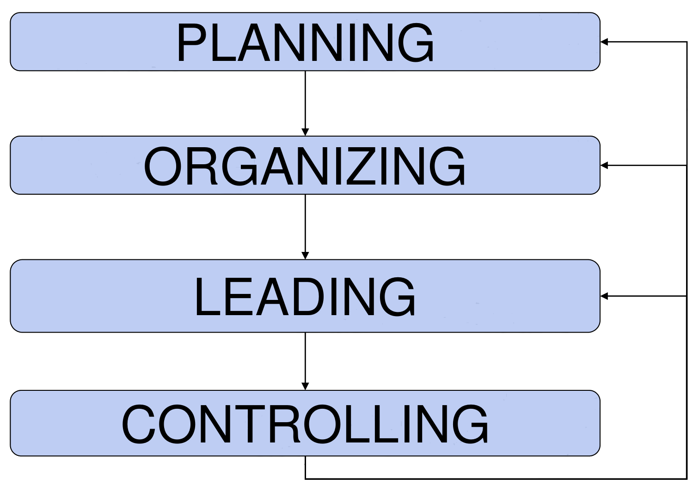
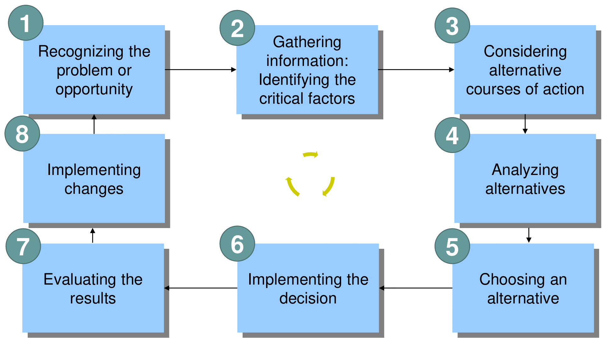
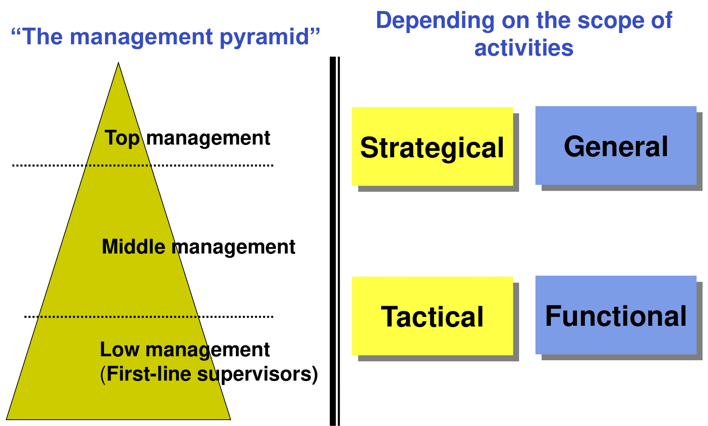
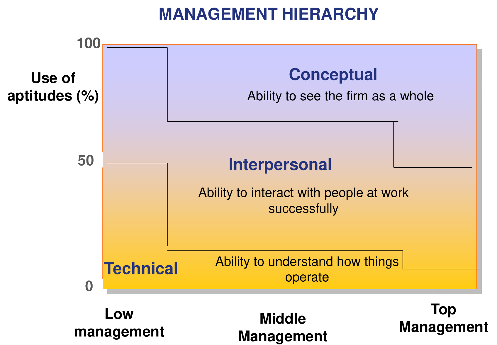
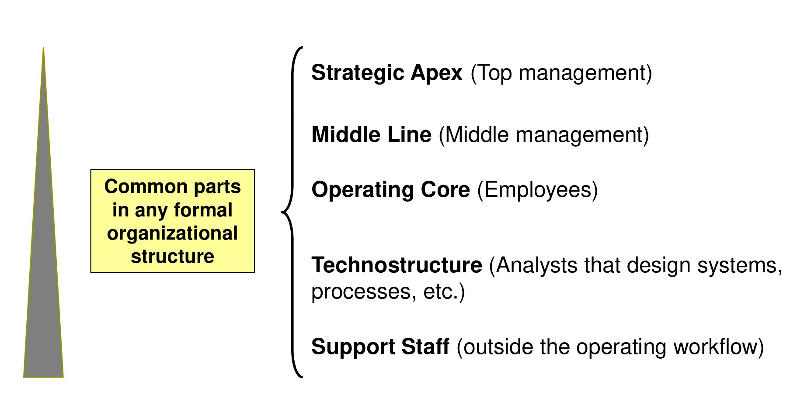

The Management Function
The four managerial functions, decisions and the decision-making process, management levels, skills and roles, planning, organizational structures and configurations, human resources management and control.
Central idea: management is the process of setting and achieving goals through four managerial functions — planning, organizing, leading and controlling — that use human, financial and material resources. Managers take routine, adaptable or innovative decisions through an eight-step process, work at three levels of the management pyramid with different mixes of technical, interpersonal and conceptual skills, and play Mintzberg's ten roles. Organizing produces a structure, formal and informal, built from five common parts and shaped into five basic configurations, from the simple structure to the adhocracy.
The topic covers [Slide 2]: the managerial functions (decisions and their types, the decision-making process, management levels, managerial skills and roles), planning, organizing (formal and informal structures and the types of formal structure), leading (human resources management) and controlling.
Part I — Managerial functions
§ 1 What management is [Slides 3-4]
Management is the process of setting and achieving goals through the execution of four basic managerial functions that use human, financial and material resources. The management functions are the four broad activities managers perform to achieve organizational goals: planning, organizing, leading and controlling [Slides 3-4].

§ 2 Decisions and types of decisions [Slide 5]
Managerial decisions are classified by two axes: the type of problem (from known and well defined to unusual and ambiguous) and the type of alternative solutions (from known to ambiguous and not planned).
| Type of decision | Problem | Alternatives |
|---|---|---|
| Routine (planned) | known and well defined | known |
| Adaptable | in between | in between |
| Innovative (not planned) | unusual and ambiguous | ambiguous and not planned |
§ 3 The decision-making process [Slide 6]
The decision-making process has eight steps: 1. recognizing the problem or opportunity; 2. gathering information (identifying the critical factors); 3. considering alternative courses of action; 4. analyzing the alternatives; 5. choosing an alternative; 6. implementing the decision; 7. evaluating the results; 8. implementing changes. The slide groups them into analyzing the alternatives and implementing the changes.

§ 4 Management levels [Slide 7]
The management pyramid has three levels: top management, middle management and low management (first-line supervisors). By the scope of their activities, top management is strategic and general; the lower levels are tactical and functional.

§ 5 Basic managerial skills [Slide 8]
Three skills are used in different proportions along the hierarchy:
| Skill | Meaning | Where it weighs most |
|---|---|---|
| Technical | the ability to understand how things operate | low management |
| Interpersonal | the ability to interact with people at work successfully | at every level |
| Conceptual | the ability to see the firm as a whole | top management |

§ 6 Managerial roles (Mintzberg, 1983) [Slide 9]
| Group | Roles |
|---|---|
| Interpersonal roles | figurehead, leader, liaison |
| Informational roles | monitor, disseminator, spokesperson |
| Decisional roles | entrepreneur, disturbance handler, resource allocator, negotiator |
Part II — Planning
§ 7 Planning [Slide 10]
Planning is the process of setting goals or objectives and deciding on the strategy to achieve them. A goal is a specific achievement to be attained at some future date. Its main steps are: 1. developing forecasts; 2. defining strategic objectives; 3. developing alternative courses of action; 4. deciding on a course of action.
Part III — Organizing
§ 8 Organizing and the organization chart [Slide 11]
Organizing is the process of arranging the human resources of the firm so that their activities contribute to the firm's goals. Its purpose is to give each person a distinct task and to coordinate those tasks so that the firm achieves its goals. It is a double process of differentiation (dividing the work) and integration (coordinating it). The organization chart is the graphic representation of the organization structure.
§ 9 Formal and informal structures [Slide 12]
The formal structure is defined by management. The informal structure is the informal contacts, communications and ways of doing things that employees develop. The real structure combines both.
§ 10 Factors that determine the structure [Slide 13]
| Factor | What it measures |
|---|---|
| Specialization | horizontal (number of tasks) and vertical (autonomy to organize one's job) |
| Standardization | how far the work is done by set rules and procedures |
| Formalization | how far the rules are written down |
| Centralization | centralized or decentralized decision-making |
| Structural configuration | departmentalization (types), number of layers (hierarchical levels), span of control, size of the administrative component |
The middle column of the standardization and formalization rows explains the terms in plain words; the slide only names them.
§ 11 The parts of a formal structure [Slide 14]
Any formal structure has five common parts: the strategic apex (top management), the middle line (middle management), the operating core (employees), the technostructure (analysts who design systems and processes) and the support staff (outside the operating workflow).

§ 12 Basic organizational configurations [Slides 15-22]
| Configuration | Features |
|---|---|
| Simple structure (entrepreneurial start-up) [Slide 15] | the strategic apex is the key part (direct supervision); only strategic apex and operating core; start-ups or very small businesses |
| Machine bureaucracy [Slide 16] | many rules, regulations and formal communications: standardization and very formal procedures in the operating core; highly specialized, routine tasks, horizontal and vertical (low-qualified employees); functional departmentalization; centralized decision-making; elaborate administrative structure with many layers and a low span of control; mature, big organizations in a stable and simple environment |
| Professional organization (professional bureaucracy) [Slide 18] | high horizontal specialization (highly qualified employees); standardization of outputs, skills and knowledge; decentralization; the staff mainly supports the operating core; all types of departmentalization; big organizations in a stable but complex environment |
| Division organization [Slide 20] | autonomous divisions; the middle line is the key part; top management coordinates their performance and outputs; each division is a bureaucracy; diversified businesses in more dynamic environments |
| Adhocracy (innovative organization) [Slide 22] | high horizontal and low vertical specialization; low standardization and formalization; decentralization is key to flexibility; matrix departmentalization; the technostructure disappears and middle line, operating core and staff are mixed; used as a complementary structure for specific projects |
Part IV — Leading and controlling
§ 13 Human resources management [Slide 23]
Human resources are the firm's employees, workers and managers. The problem is to align individual interests with the objectives of the company. Human resources management is the process of recruiting, selecting, training, appraising and compensating employees; it is a basic function of every manager. It involves directing (motivation, leadership and communication) and staffing (recruiting, selecting and training; performance appraisal systems, compensation and incentive programmes).
§ 14 Controlling [Slides 24-25]
Controlling is the task of ensuring that activities are providing the planned results: managers must ensure that their workers perform as expected [Slide 24]. It involves establishing standards, measuring actual performance, identifying deviations and taking corrective action if required. All control systems aim to influence employee behaviour, and planning and controlling are inseparable.
Types of control [Slide 25]: by who is controlled (top, middle or low management); by what area (the whole company, a unit, a department or an individual); by when (reactive, proactive or interactive control); and by frequency (constant, periodic or occasional control).